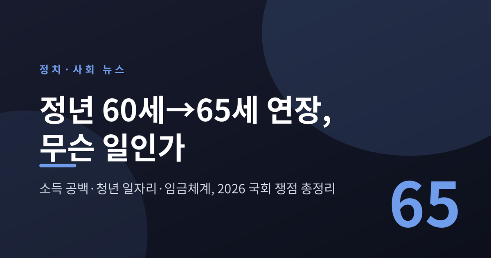
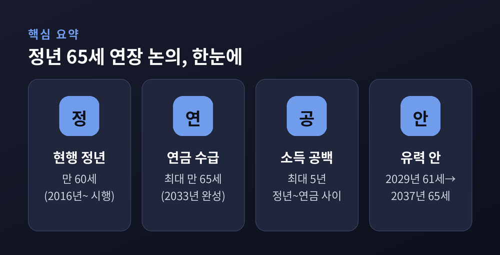
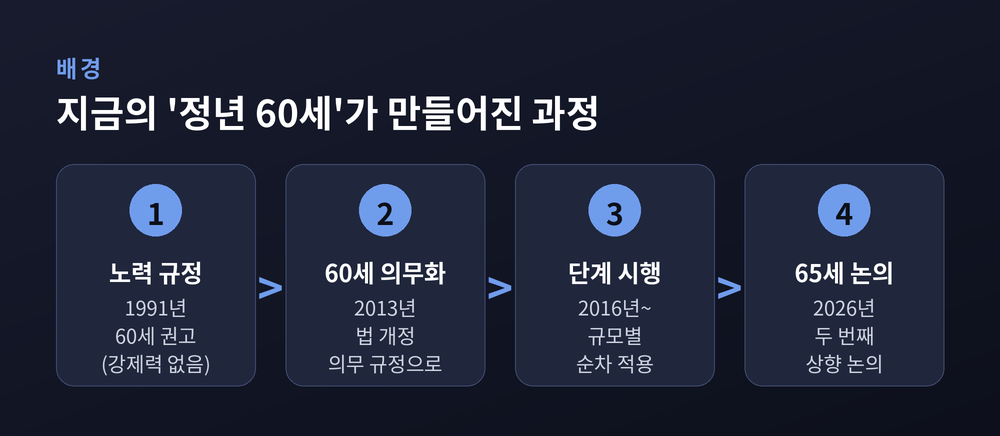
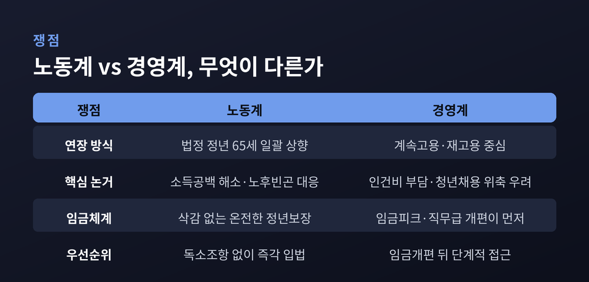
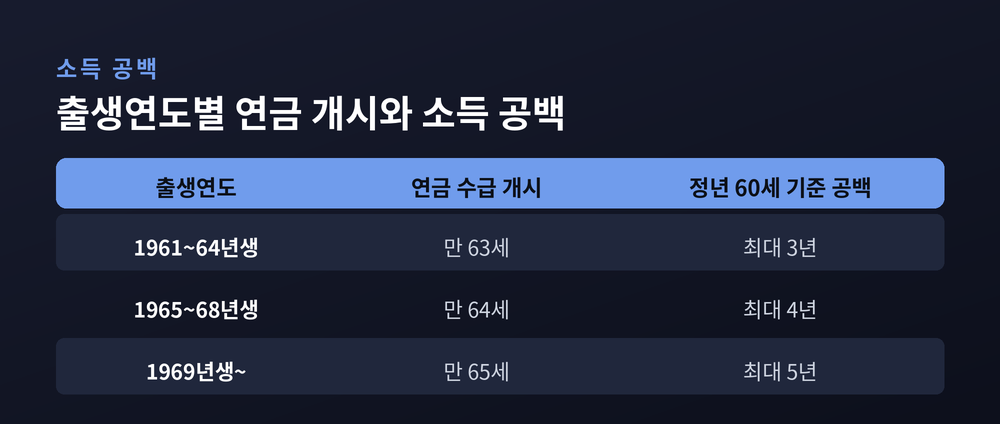

정년 60세→65세 연장, 지금 국회에서 무슨 일이 벌어지나

이번 글에서는 2026년 정치·사회의 최대 노동 현안으로 떠오른 '정년 65세 연장' 논의를 정리해 보겠습니다. 무슨 일이 벌어지고 있는지, 왜 지금 중요한지, 그리고 노동계와 경영계·여야가 무엇을 두고 부딪치는지를 한쪽에 치우치지 않고 짚어보려 합니다.
무슨 일이 벌어지고 있나
현재 법으로 정해진 정년은 60세입니다. 이 60세를 65세까지 단계적으로 올리자는 논의가 올해 국회의 뜨거운 쟁점으로 올라섰습니다.
출발은 정부였습니다. 2026년 3월, 정부가 '65세 단계적 연장 입법 추진'을 공식화했습니다. 이어 더불어민주당은 '회복과 성장을 위한 정년연장특별위원회'를 꾸려 법안을 조율했고, 6월 말 최종안 확정을 목표로 삼았습니다.
6·3 지방선거가 끝난 뒤 논의는 속도를 냈습니다. 하반기 국회가 풀어야 할 가장 큰 노동 과제로 정년연장이 지목되고 있는 셈입니다. 노동계는 이미 정치권에 조속한 입법을 요구하고 나섰습니다.

왜 지금 중요한가 — '소득 공백' 5년의 무게
핵심은 국민연금입니다. 국민연금을 받기 시작하는 나이가 계속 뒤로 밀리고 있기 때문입니다.
국민연금 수급개시연령은 5년마다 한 살씩 올라, 2033년이면 만 65세로 완성됩니다. 출생연도로 나누면 이렇습니다. 1961~1964년생은 만 63세, 1965~1968년생은 만 64세, 1969년 이후 출생자는 만 65세부터 연금을 받습니다.
그런데 정년은 여전히 60세입니다. 60세에 회사를 떠나도 연금은 최대 65세가 되어야 나옵니다. 그 사이 최대 5년의 '소득 공백'이 생깁니다. 이 공백을 메우자는 것이 정년연장 논의의 가장 큰 동력입니다.
배경에는 무거운 통계가 있습니다. 한국은 이미 65세 이상 인구가 20%를 넘는 초고령사회에 들어섰습니다. 은퇴연령층의 상대적 빈곤율은 2022년 기준 약 39.7%로, OECD 회원국 가운데 가장 높은 축에 속합니다. 영국(14.9%)이나 프랑스(6.1%)와 비교하면 격차가 큽니다.
다만 짚어둘 대목이 있습니다. 실제 근로자의 평균 퇴직 연령은 약 49.3세로, 법정 정년 60세보다 한참 이릅니다. 권고사직이나 사업 부진 같은 비자발적 조기퇴직 비중이 41%를 넘습니다. "정년만 올린다고 실제 고용이 보장되느냐"는 물음이 나오는 이유이기도 합니다.
배경 — 지금의 '정년 60세'도 10년밖에 안 됐다
의외로 '정년 60세'는 오래된 제도가 아닙니다.
1991년 처음 생긴 정년 규정은 "60세 이상이 되도록 노력하라"는 권고에 그쳤습니다. 강제력이 없다 보니 실효성 논란이 일었습니다. 그래서 정부는 2013년 법을 고쳐 "사업주는 정년을 60세 이상으로 정해야 한다"는 의무 규정으로 바꿨습니다. 실제 시행은 2016년부터 사업장 규모별로 단계적으로 이뤄졌습니다.
정리하면 이렇습니다. 예전엔 노력만 하면 됐습니다. 지금은 60세가 법적 의무입니다. 이번 논의는 그 두 번째 상향, 즉 60세에서 65세로 가는 문제입니다.

쟁점 하나 — 방식을 두고 갈라진 노동계와 경영계
가장 첨예한 지점은 '어떻게 연장할 것인가'입니다.
노동계, 특히 양대 노총은 분명합니다. "독소조항 없는 온전한 65세 정년연장을 즉각 입법하라"는 입장입니다. 국민연금 수급연령(65세)과 법정 정년을 맞춰 소득 공백을 원천적으로 없애자는 것입니다. 재고용 방식은 임금이 깎이고 고용이 불안해진다며 경계합니다.
경영계는 결이 다릅니다. 경총 등은 "일률적인 법정 정년연장은 노동시장 이중구조를 키우고 청년 채용을 줄여 세대 갈등을 부른다"고 봅니다. 대신 임금체계를 먼저 개편하고, 퇴직 후 다시 고용하는 '계속고용(재고용)' 방식이 현실적이라고 주장합니다.

한쪽은 권리를, 다른 한쪽은 부담을 먼저 말합니다. 어느 쪽도 근거가 없지 않습니다. 그래서 접점을 찾기가 쉽지 않습니다.
쟁점 둘 — 여야의 셈법, 그리고 청년 일자리
정치권도 방식이 엇갈립니다.
더불어민주당은 법정 정년의 단계적 상향에 무게를 둡니다. 검토안은 2028년 또는 2029년 61세로 시작해, 2년마다 한 살씩 올려 2037년 65세를 완성하는 방식입니다. 22대 국회에서 민주당이 낸 정년연장 관련 법안만 8건에 이릅니다.
국민의힘은 획일적 상향에 신중합니다. '계속고용 의무'를 중심에 두고, 국민연금 수급연령과 연동하되 정년연장·재고용·정년폐지 가운데 무엇을 고를지는 기업 자율에 맡기자는 쪽입니다. 규모·산업·업종별로 다르게 적용하자는 차등화 방안도 내놨습니다. "65세를 강제하면 청년 신규채용이 위축되고 세대 갈등이 커진다"는 우려를 앞세웁니다.
청년 문제는 이 논쟁의 뇌관입니다. 경총 추산으로는, 정년이 65세로 늘면 60~64세 정규직 약 59만 명을 계속 고용하는 데 연간 약 30조 2000억 원이 든다고 합니다. 같은 돈이면 25~29세 청년 약 90만 명을 새로 뽑을 수 있는 규모라는 계산입니다. 물론 이 추산 자체를 두고도 해석이 엇갈립니다. 다만 "정년 논쟁에서 정작 청년의 자리는 비어 있다"는 지적은 새겨둘 만합니다.

쟁점 셋 — 결국 임금, 그리고 해외의 답
논의가 늘 막히는 곳은 임금입니다.
한국의 상당수 기업은 근속연수가 길수록 임금이 오르는 연공급, 이른바 호봉제를 씁니다. 이 구조에서 정년을 늘리면 인건비 부담이 가파르게 커집니다. 그래서 임금피크제나 직무급제 같은 임금체계 개편이 정년연장과 한 묶음으로 논의됩니다. 개편 과정의 취업규칙 변경 절차를 한시적으로 완화하는 방안도 검토됐습니다.
해외는 어떨까요. 일본은 2006년부터 기업에 정년 65세 연장, 정년 폐지, 계속고용 가운데 하나를 고르게 했습니다. 2025년 말 기준 계속고용을 택한 기업이 65%가량으로 가장 많습니다. 강제 상향 대신 선택지를 준 셈입니다. 반면 미국은 1986년, 영국은 2011년에 아예 정년 제도를 없앴습니다. 나이만을 이유로 한 강제 퇴직을 차별로 본 것입니다.
앞으로 어떻게 될까
당장 완전한 합의를 기대하기는 어렵습니다.
하반기 국회에서 '법정 정년 65세 상향'과 '계속고용 의무'라는 두 방식이 정면으로 맞섭니다. 현실적으로는 단계적 상향에 임금체계 개편과 재고용을 함께 얹는 절충안이 논의될 가능성이 큽니다. 유력한 그림은 2028~2029년 61세로 시작해 2037년 65세에 이르는 경로입니다.
관건은 세 가지입니다. 국민연금 수급연령(2033년 65세)과의 시차를 어떻게 좁힐지, 임금체계 개편에 노사가 어디까지 합의할지, 그리고 청년 일자리와 기업 부담을 어떻게 함께 끌어안을지입니다.
끝으로 한 가지만 짚겠습니다. 이 문제는 어느 한 세대의 이익으로 좁혀 볼 사안이 아닙니다.
"오래 일하게 하는 것"과 "새로 일하게 하는 것"은 대립이 아니라 같은 질문의 두 얼굴입니다.
정년 5년을 어떻게 늘릴 것인가. 그 답은 결국 우리가 일과 노후를 어떻게 나눠 가질 것인가에 달려 있는지도 모릅니다.